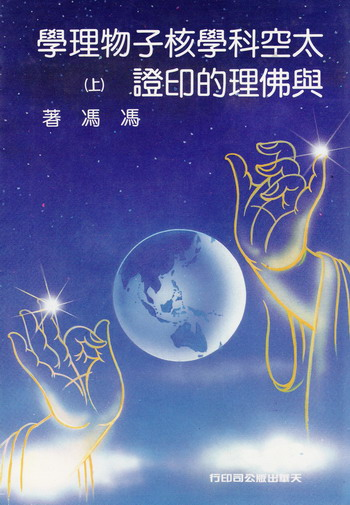
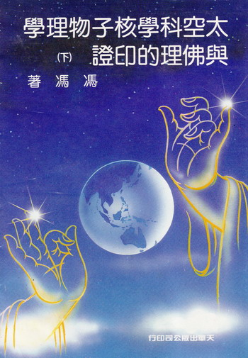

|  |  |
《太空科学核子物理学与佛理的印证》
1987 年
我的科学与佛学印证的第一篇论文，最初是投寄给美国“万佛城”月刊的，那篇“西方科学走向东方佛学空观”寄给该刊一年多，也没获得发表函询多次也毫无回音，我在失望之余，只好把副本投寄香港“内明”月刊本来亦不存什么奢望，怎料沈老居士来函大加赞 赏，许为奇才，并将拙文置于“内明”月刊的篇首，以最显著地位予以推介后来的二十篇论文也受到沈老同样的优待，科学印证佛理一书，得以奠基问世，首先要感谢沈老居士后来我将稿交请天华出版公司出集，征求沈老意见，他也欣然同意，并不据为内明版权所有沈老的胸襟，真是令人缅怀不置！
目录